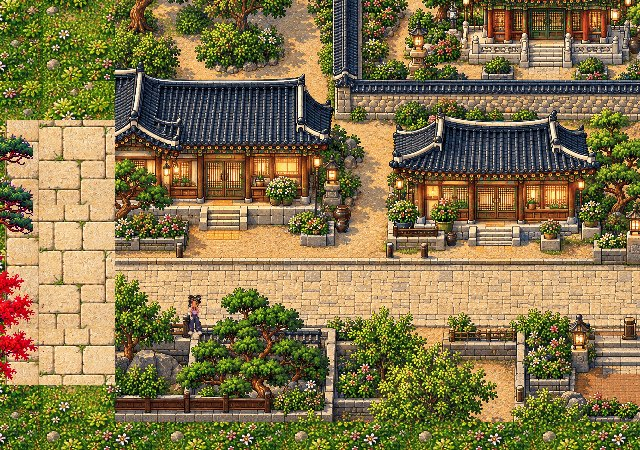
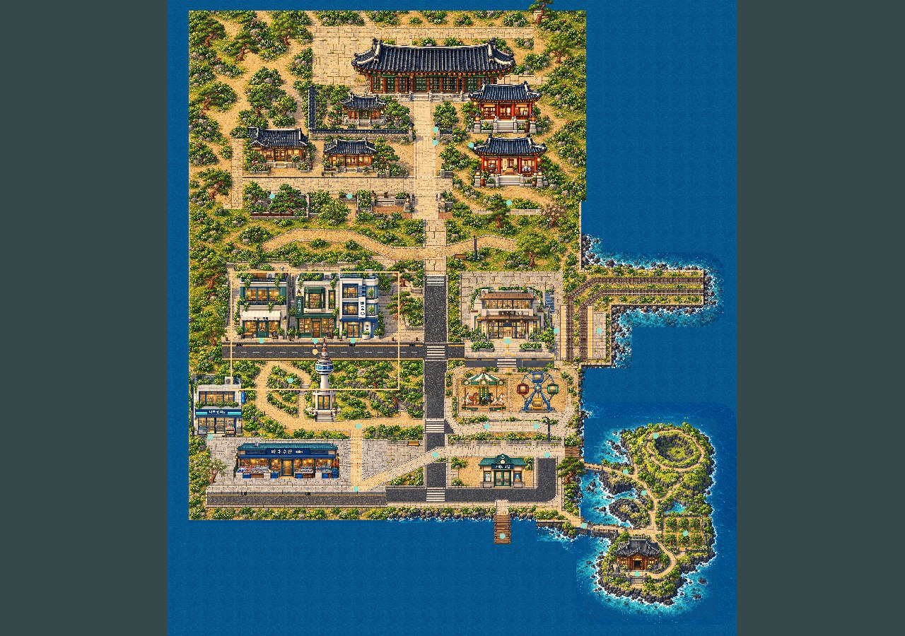
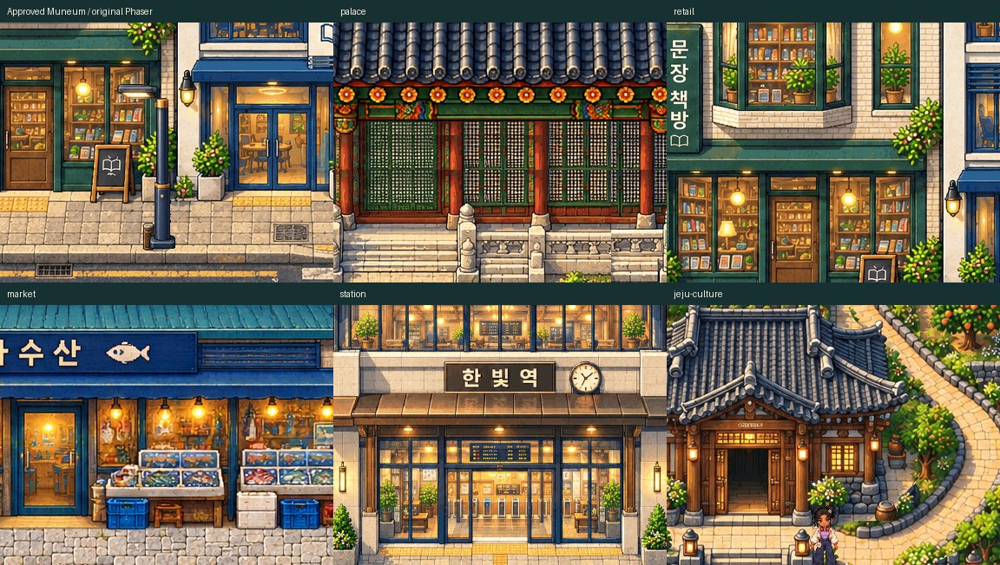

02 Academy and hanok courts


Final human artistic acceptance is pending. The shared direction is conditionally approved. Bakery is still required/unplaced. Tower/retail projection, station strip, inherited route failures and physical hardware/device acceptance remain open. New landmark profiles are candidates, not automatically approved art.
PLAY REVIEW WORLD · QA and remaining decisions · Actual coverage · Collision/navigation · Physical-device handoff

Actual Phaser overview mode; scaled overview is not native-pixel proof. Native region PNGs below are1280×900, zoom1, DPR1.
Continuous actual WASD/Shift walk,17 destinations including market and ferry approaches; no teleport or collision override. This lightweight video is512×400 at8fps with nearest-neighbor review resize. Native-resolution1280×1000 recording copy · Actual movement data. Use native PNGs for pixel inspection.

Each art cell is an unchanged384×300 native crop. This board is a review derivative; it does not award artistic PASS.
BEFORE is the preserved three-pilot world context at matching cameras. JPEG previews are under1MB; click through to untouched native Phaser PNGs and original-scale crops.

Closed8px strip overlay · Exact landmark projections · Protected hashes/checkpoints · Source provenance · Technical QA
No full-world acceptance, main merge or public deployment. Physical Android Chrome and iPhone Safari are NOT TESTED.